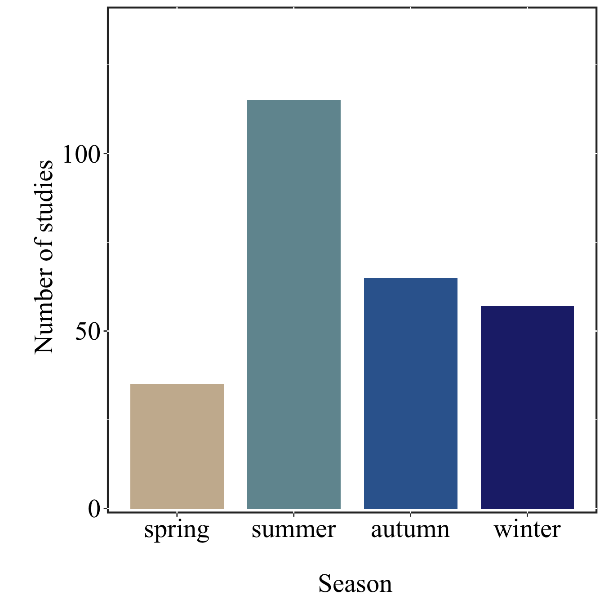
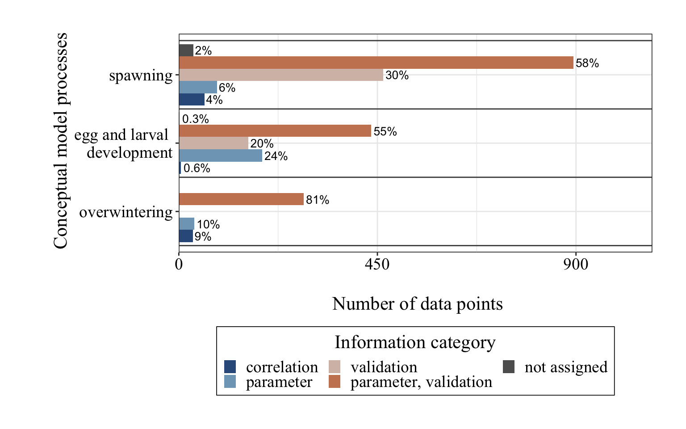

This document contains the workflow for selecting the papers that were reviewed in the systematic literature review as well as the R-Code used to produce the plots presented in the manuscript.
Setting up the environment
Code
# load relevant R-packageslibrary(tidyverse)library(here)library(vroom)library(openxlsx)library(scico)library(flextable)# colour key for different information categoriescolourKey <-tibble(informationCategory =factor(c('correlation', 'parameter', 'validation','parameter, validation', 'not assigned'), levels =c('correlation', 'parameter', 'validation','parameter, validation', 'not assigned')),label = informationCategory,colour =c(scico(5, palette ='vikO', begin =0.2, end =0.8, direction =-1)[5:2],'#5e5e5e'))# plot function for Figures 7-10:plotFunc <-function(inputData, xvar, yvar,xlab ='\n Number of data points', ylab ='\n Conceptual model processes'){# inputData <- inputData %>% # droplevels() inputData %>%ggplot(aes_string(x = xvar, y = yvar, fill ="informationCategory")) +geom_col(position =position_dodge(width =0.9), alpha =1) +geom_hline(yintercept =seq(0.5, length(levels(inputData$label))+0.5, by =1),linewith =0.35, colour ='#4d4d4d') +geom_text(data = inputData,aes(label =ifelse(proportion ==0, '',ifelse(proportion <1, paste0(round(proportion, 1), "%"),paste0(round(proportion), "%")))), position =position_dodge(width =0.9), hjust =-0.1, size =3.5) +scale_x_continuous(expand =c(0, 0), breaks =unlist(ifelse(max(inputData$count) <100,list(seq(0, floor(1.1*max(inputData$count)/10) *10, by = (ceiling(max(inputData$count)/10) *10)/2)),list(seq(0, floor(1.1*max(inputData$count)/100) *100, by = (ceiling(max(inputData$count)/100) *100)/2)))),# breaks = c(0,50, seq(100,800, by = 100)), limits =c(0, max(inputData$count) *1.2)) +labs(x = xlab, y = ylab, fill ='Information category') +# scale_fill_identity(labels = levels(droplevels(filter(inputData, UQ(sym(xvar))>0)$informationCategory)),#c('correlation', 'parameter', 'validation', 'parameter, validation', 'not assigned'), # guide = guide_legend(# direction = "vertical",# title.position = "top",# ncol = 3,# title.hjust = 0.5)) +scale_fill_manual(values =setNames(as.character(unique(filter(inputData, UQ(sym(xvar)) >0)$colour)), as.character(unique(filter(inputData, UQ(sym(xvar)) >0)$informationCategory))),guide =guide_legend(direction ="vertical",title.position ="top",ncol =3,title.hjust =0.5) ) +theme_bw()+theme(panel.background =element_rect(fill =NA, colour ='#2e2e2e'),plot.margin =unit(c(1,1,1,1),'cm'),legend.position ="bottom",legend.key.size =unit(0.4, "cm"),legend.title =element_text(size =16, colour="black", family="Times New Roman"),legend.text =element_text(size =14, colour="black", family="Times New Roman"),legend.background =element_rect(fill="white",linewidth =0.3, linetype="solid",colour ="black"),strip.background =element_rect(fill =NA, colour =NA),strip.text =element_text(size =16, colour ="black", family ="Times New Roman"),axis.text.x =element_text(size =14, colour="black", family="Times New Roman"),axis.text.y =element_text(size =14, colour="black", family="Times New Roman"),axis.title.x =element_text(size =16, colour="black", family="Times New Roman"),axis.title.y =element_text(size =16, colour="black", family="Times New Roman"))}
Systematic literature review
For the systematic literature review, we searched the Web of Science and Scopus using a pre-determined set of keywords, as described in the methods section of the manuscript. We used the following R code to remove duplicates from the returned lists of studies and to generate a preliminary list of candidate studies for the systematic literature review. This list was then manually reviewed by two people and each study was classified as relevant or not relevant for our purposes. This was done because many of the studies were from unrelated fields of research such as aquaculture research (e.g. testing the nutritional properties of krill meal), and therefore did not contain information we were looking for.
The R-code used to filter the query results according to keywords and the subsequent removal of duplicates is documented in the following R-Code.
Code
# define function that combines the lists of studies from web of science and scopus, filters them using pre-defined keywords. readAndCleanQueryResults <-function(wosFilePaths, scopusFilePaths, fileSubsetKey,obligatoryKeywords =c('euphausia superba|antarctic krill'), studyKeywords, topicKeyword){# read data from web of science wosData <-vroom(wosFilePaths[str_detect(wosFilePaths, fileSubsetKey)]) %>%select(authors = AU, title = TI, journal = SO, abstract = AB, publishingDate = PD, publishingYear = PY, doi = DI)# read data from scopus scopusData <-vroom(scopusFilePaths[str_detect(scopusFilePaths, fileSubsetKey)]) %>%select(authors = Authors, title = Title, journal ="Source title", abstract = Abstract, publishingYear = Year, doi = DOI)#Merge scopus and web of science results, set all text to lower case for easier handling combinedData <- wosData %>%bind_rows(scopusData) %>%mutate_all(tolower)#Filter the results by studyKeywords#In addition: remove duplicates that have been found in scopus and web of science combinedDataFiltered <- combinedData %>%mutate(mustWordsIncluded =str_detect(title, pattern = obligatoryKeywords) +str_detect(abstract, pattern = obligatoryKeywords),canWordsIncluded =str_detect(title, pattern = studyKeywords) +str_detect(abstract, pattern = studyKeywords)) %>%filter(mustWordsIncluded >0& canWordsIncluded >0) %>%distinct(title, .keep_all = T) %>%mutate(topic = topicKeyword) # return the clean and combined datareturn(combinedDataFiltered)}# create tibble that contains topic-specific keywords to subset file lists and studieskeyTib <-tibble(topicKeyword =c('autumn','development','overwintering','spawning'),fileSubsetKey =c('Autumn|Fall|Lipid','Larvae|Embryo','Winter','Spawning'),studyKeywords =c('fall|autumn|lipid','larva|egg|embryo|ontogen','winter|sea ice','spawning|fecundity|egg|vitellogenesis'))# Define the fixed argumentsfixedArgs <-list(wosFilePaths <-list.files('queryResults','wos', full.names = T), scopusFilePaths <-list.files('queryResults','scopus', full.names = T),obligatoryKeywords =c('euphausia superba|antarctic krill'))# Use pmap_dfr to apply the function to each row of keyTib, then remove duplicatesresults <-pmap_dfr(keyTib, function(topicKeyword, fileSubsetKey, studyKeywords) {# Combine fixed and varying arguments args <-c(fixedArgs, list(topicKeyword = topicKeyword, fileSubsetKey = fileSubsetKey, studyKeywords = studyKeywords))# Call the function with the combined argumentsdo.call(readAndCleanQueryResults, args)}) %>%distinct(title, .keep_all = T) %>%arrange(topic, -mustWordsIncluded, -canWordsIncluded)# write dataframe to file. This list of studies was further filtered based on a relevance assessment conducted by 2 persons.# write.xlsx(results,'paper1LiteraturePreliminary.xlsx')
Data Analysis
We extracted data from 254 publications and assigned each of the 3,589 datapoints to one or several sub-units of the idealised krill models and added more information regarding their information category. We use the resulting dataset to identify processes related to krill biology with the biggest data gaps if a krill life cycle model were to be parameterised. In the following code snipptes, we document the data analysis that led to Figures 5-10 in the main manuscript.
Table 2
Total number of datapoints for each submechanism, subunit and information category.
Code
# import supplementary table which contains information about the parameter IDssubUnitsMeta <-read.xlsx('data/ICEDPaper1_ModelParams.xlsx') # import the classified data points extracted from the reviewed literature, unnest to unwrap datapoints that were assigned to more than one model subunits. Then add supplementary information on the assigned subunit IDs from subUnitsMeta.parameterClassification <-read.xlsx('data/krillDataClassified20240903.xlsx') %>%select(parameterID, modelSubUnit, informationCategory) %>%mutate(modelSubUnit =str_split(modelSubUnit, pattern =',')) %>%unnest(modelSubUnit) %>%left_join(., subUnitsMeta, by ='modelSubUnit') %>%mutate(informationCategory =ifelse(informationCategory =='-'| informationCategory ==' ',NA, informationCategory),informationCategory =ifelse(is.na(informationCategory), 'not assigned', informationCategory),informationCategory =factor(informationCategory, levels =c('correlation', 'parameter', 'validation','parameter, validation', 'not assigned')),submechanism =ifelse(is.na(submechanism), 'not assigned', ifelse(submechanism =='egg_larval', 'egg and larval \ndevelopment', submechanism)),submechanism =factor(submechanism, levels =c('not assigned','mortality','overwintering','egg and larval \ndevelopment', 'spawning'))) # Table 3: Total number of datapoints for each submechanism, subunit and information category.data_counts <- parameterClassification %>%group_by(submechanism, informationCategory) %>%summarize(count =n(), .groups ="keep") %>%ungroup() %>%complete(submechanism, informationCategory) %>%mutate(count =ifelse(is.na(count), 0, count)) %>%group_by(submechanism) %>%mutate(tot =sum(count),proportion = count / tot *100) %>%# proportion of countsungroup() %>%left_join(., colourKey, by ='informationCategory') %>%mutate(colour =factor(colour, levels =c(scico(5, palette ='vikO', begin =0.2, end =0.8, direction =-1)[5:2],'#5e5e5e')))table_counts <- data_counts %>%select(-colour) %>%unique() %>%mutate(tot_across =sum(unique(tot)),proportion_across = tot / tot_across *100) %>%mutate(proportion =round(proportion, 1),proportion_across =round(proportion_across, 1)) %>%flextable() %>%set_header_labels(submechanism ="Submechanism",informationCategory ="Information category",count ="Count",tot ="Total N",proportion ="Proportion (%) of information category",tot_across ="Dataset total N",proportion_across ="Proportion (%) of total dataset") %>%merge_v(j =c("submechanism", "informationCategory", "tot", "tot_across", "proportion_across")) %>%autofit() %>%align(align ="center", part ="all") %>%bg(bg ="#D3D3D3", part ="header") %>%bold(part ="header") %>%border_outer() %>%border_inner_h(part ="all") %>%border_inner_v(part ="all")table_counts
Submechanism
Information category
Count
Total N
Proportion (%) of information category
label
Dataset total N
Proportion (%) of total dataset
not assigned
correlation
5
1,540
0.3
correlation
4,327
35.6
parameter
5
0.3
parameter
validation
1,064
69.1
validation
parameter, validation
122
7.9
parameter, validation
not assigned
344
22.3
not assigned
mortality
correlation
0
113
0.0
correlation
2.6
parameter
33
29.2
parameter
validation
0
0.0
validation
parameter, validation
80
70.8
parameter, validation
not assigned
0
0.0
not assigned
overwintering
correlation
32
350
9.1
correlation
8.1
parameter
35
10.0
parameter
validation
0
0.0
validation
parameter, validation
283
80.9
parameter, validation
not assigned
0
0.0
not assigned
egg and larval development
correlation
5
789
0.6
correlation
18.2
parameter
189
24.0
parameter
validation
157
19.9
validation
parameter, validation
436
55.3
parameter, validation
not assigned
2
0.3
not assigned
spawning
correlation
58
1,535
3.8
correlation
35.5
parameter
87
5.7
parameter
validation
463
30.2
validation
parameter, validation
894
58.2
parameter, validation
not assigned
33
2.1
not assigned
Figure 5
Seasonal distribution of analysed studies
Code
seasonalDistData <-read.xlsx('data/krillDataClassified20240903.xlsx') %>%select(title =2, season =6) %>%distinct(title, season) %>%mutate(season =ifelse(season =='year around', 'summer, autumn, winter, spring', season),seasonSingle =strsplit(season, '\\,|;|-')) %>%unnest(seasonSingle) %>%mutate(seasonSingle =str_replace_all(seasonSingle, pattern =' ', replacement =''),seasonSingle =ifelse(seasonSingle %in%c('autum','autumn', 'fall'), 'autumn', seasonSingle)) %>%filter(!is.na(seasonSingle)) %>%group_by(seasonSingle) %>%summarize(count =n()) %>%mutate(seasonSingle =factor(seasonSingle, levels =c('spring','summer','autumn','winter'))) #%>% fig5 <- seasonalDistData %>%ggplot(.,aes(x = seasonSingle, y = count, fill = seasonSingle)) +geom_col(width =0.8) +labs(x ="\n Season", y ='\n Number of studies') +scale_y_continuous(expand =c(0.01, 0), limits =c(0,140),breaks =c(0,50,100)) +scale_fill_manual(values =scico(4, palette ='lapaz', begin =0.1, end =0.8, direction =-1)) +theme(panel.background =element_rect(fill =NA, colour ='#2e2e2e', linewidth =1.5),legend.position ='none',strip.background =element_rect(fill =NA),axis.text.x =element_text(size =22, colour="black", family="Times New Roman"),axis.title.x =element_text(size =22, colour="black", family="Times New Roman"), axis.title.y =element_text(size =22, colour="black", family="Times New Roman"), axis.text.y =element_text(size =22, colour="black", family="Times New Roman"))fig5

Figure 6
Total number of data points recorded for each information category (colour-coded - see legend below plot) and corresponding conceptual model process (spawning, egg and larval development, and overwintering)
Code
# FIGURE 6 # create figure that features only spawning, egg and larval, and overwinteringfig6Data <- data_counts %>%complete(submechanism, informationCategory) %>%filter(!submechanism %in%c('not assigned', 'mortality'))figure6 <-plotFunc(fig6Data, xvar ='count', yvar ='submechanism')ggsave('plots/Figure6.png', plot = figure6, width =7, height =5, units="in", limitsize =TRUE, scale =1.2, dpi =300, bg ="white")figure6

Figure 7
a) Categorisation of data points related to spawning. The number of data points assigned to each state variable
Code
new_labels_spawn <-c("gonads_development"='gonads\ndevelopment',"gonads_size"='gonads\nsize',"tissue_reserves_carbs"='carb\nreserves',"tissue_reserves_proteins"='protein\nreserves',"tissue_reserves_lipids"='lipid\nreserves',"ingestion"='ingestion',"assimilation"='assimilation',"maintenance _respiration"='respiration',"maintenance _moulting"='moulting',"maintenance _excretion"='excretion',"spawning"='spawning')# Process spawningData with updated labelsspawningData <- parameterClassification %>%filter(submechanism =='spawning') %>%group_by(name, enviro_vars, informationCategory) %>%summarize(count =n(), .groups ="keep") %>%ungroup() %>%complete(name, enviro_vars, informationCategory) |>mutate(count =ifelse(is.na(count), 0, count)) |>group_by(name) |>mutate(tot =sum(count),proportion = count / tot *100) |>mutate(label =factor(name, levels =names(new_labels_spawn), labels = new_labels_spawn)) %>%left_join(., select(colourKey,informationCategory, colour), by ='informationCategory') %>%mutate(colour =factor(colour, levels =c(scico(5, palette ='vikO', begin =0.2, end =0.8, direction =-1)[5:2],'#5e5e5e'))) figure7a <-plotFunc(inputData =filter(spawningData, is.na(enviro_vars) &!label %in%c('spawning','excretion','moulting','respiration','assimilation','ingestion')), xvar ='count', yvar ='label', ylab ='\n Model sub-units')figure7a
b) Categorisation of data points related to spawning. The number of data points assigned to each function related to environmental and ecological factors
b) Categorisation of data points related to egg and larval development. The number of data points assigned to each function related to environmental and ecological factors
b) Categorisation of data points related to overwintering. The number of data points assigned to each function related to environmental and ecological factors
---title: "*Mapping the data landscape for developing and parameterising Antarctic krill models* - **Supporting R-Code**"title-block-style: defaulttitle-block-banner: truehighlight-style: githubauthor: - Alexis Bahl - Dominik Bahlburg - Devi Veytia - Zephyr Sylvester - David Green - Svenja Halfter - Cecilia Liszka - Denise O'Sullivan - Emilce Rombolá - Alexey Ryabov - Sally Thorpe - Evgeny Pakhomov - So Kawaguchi - Eileen Hofmann - Nadine Jonston - Emma Young - Jack Conroy - Kim Bernard - Eugene Murphydate: 08.19.2024theme: default format: html: code-tools: true code-fold: true code-copy: true html-math-method: katex toc: true toc-title: On this page toc-location: lefteditor: visualexecute: echo: true warning: false message: false---## IntroductionThis document contains the workflow for selecting the papers that were reviewed in the systematic literature review as well as the R-Code used to produce the plots presented in the manuscript.## Setting up the environment```{r}# load relevant R-packageslibrary(tidyverse)library(here)library(vroom)library(openxlsx)library(scico)library(flextable)# colour key for different information categoriescolourKey <-tibble(informationCategory =factor(c('correlation', 'parameter', 'validation','parameter, validation', 'not assigned'), levels =c('correlation', 'parameter', 'validation','parameter, validation', 'not assigned')),label = informationCategory,colour =c(scico(5, palette ='vikO', begin =0.2, end =0.8, direction =-1)[5:2],'#5e5e5e'))# plot function for Figures 7-10:plotFunc <-function(inputData, xvar, yvar,xlab ='\n Number of data points', ylab ='\n Conceptual model processes'){# inputData <- inputData %>% # droplevels() inputData %>%ggplot(aes_string(x = xvar, y = yvar, fill ="informationCategory")) +geom_col(position =position_dodge(width =0.9), alpha =1) +geom_hline(yintercept =seq(0.5, length(levels(inputData$label))+0.5, by =1),linewith =0.35, colour ='#4d4d4d') +geom_text(data = inputData,aes(label =ifelse(proportion ==0, '',ifelse(proportion <1, paste0(round(proportion, 1), "%"),paste0(round(proportion), "%")))), position =position_dodge(width =0.9), hjust =-0.1, size =3.5) +scale_x_continuous(expand =c(0, 0), breaks =unlist(ifelse(max(inputData$count) <100,list(seq(0, floor(1.1*max(inputData$count)/10) *10, by = (ceiling(max(inputData$count)/10) *10)/2)),list(seq(0, floor(1.1*max(inputData$count)/100) *100, by = (ceiling(max(inputData$count)/100) *100)/2)))),# breaks = c(0,50, seq(100,800, by = 100)), limits =c(0, max(inputData$count) *1.2)) +labs(x = xlab, y = ylab, fill ='Information category') +# scale_fill_identity(labels = levels(droplevels(filter(inputData, UQ(sym(xvar))>0)$informationCategory)),#c('correlation', 'parameter', 'validation', 'parameter, validation', 'not assigned'), # guide = guide_legend(# direction = "vertical",# title.position = "top",# ncol = 3,# title.hjust = 0.5)) +scale_fill_manual(values =setNames(as.character(unique(filter(inputData, UQ(sym(xvar)) >0)$colour)), as.character(unique(filter(inputData, UQ(sym(xvar)) >0)$informationCategory))),guide =guide_legend(direction ="vertical",title.position ="top",ncol =3,title.hjust =0.5) ) +theme_bw()+theme(panel.background =element_rect(fill =NA, colour ='#2e2e2e'),plot.margin =unit(c(1,1,1,1),'cm'),legend.position ="bottom",legend.key.size =unit(0.4, "cm"),legend.title =element_text(size =16, colour="black", family="Times New Roman"),legend.text =element_text(size =14, colour="black", family="Times New Roman"),legend.background =element_rect(fill="white",linewidth =0.3, linetype="solid",colour ="black"),strip.background =element_rect(fill =NA, colour =NA),strip.text =element_text(size =16, colour ="black", family ="Times New Roman"),axis.text.x =element_text(size =14, colour="black", family="Times New Roman"),axis.text.y =element_text(size =14, colour="black", family="Times New Roman"),axis.title.x =element_text(size =16, colour="black", family="Times New Roman"),axis.title.y =element_text(size =16, colour="black", family="Times New Roman"))}```## Systematic literature reviewFor the systematic literature review, we searched the Web of Science and Scopus using a pre-determined set of keywords, as described in the methods section of the manuscript. We used the following R code to remove duplicates from the returned lists of studies and to generate a preliminary list of candidate studies for the systematic literature review. This list was then manually reviewed by two people and each study was classified as relevant or not relevant for our purposes. This was done because many of the studies were from unrelated fields of research such as aquaculture research (e.g. testing the nutritional properties of krill meal), and therefore did not contain information we were looking for.The R-code used to filter the query results according to keywords and the subsequent removal of duplicates is documented in the following R-Code.```{r}# define function that combines the lists of studies from web of science and scopus, filters them using pre-defined keywords. readAndCleanQueryResults <-function(wosFilePaths, scopusFilePaths, fileSubsetKey,obligatoryKeywords =c('euphausia superba|antarctic krill'), studyKeywords, topicKeyword){# read data from web of science wosData <-vroom(wosFilePaths[str_detect(wosFilePaths, fileSubsetKey)]) %>%select(authors = AU, title = TI, journal = SO, abstract = AB, publishingDate = PD, publishingYear = PY, doi = DI)# read data from scopus scopusData <-vroom(scopusFilePaths[str_detect(scopusFilePaths, fileSubsetKey)]) %>%select(authors = Authors, title = Title, journal ="Source title", abstract = Abstract, publishingYear = Year, doi = DOI)#Merge scopus and web of science results, set all text to lower case for easier handling combinedData <- wosData %>%bind_rows(scopusData) %>%mutate_all(tolower)#Filter the results by studyKeywords#In addition: remove duplicates that have been found in scopus and web of science combinedDataFiltered <- combinedData %>%mutate(mustWordsIncluded =str_detect(title, pattern = obligatoryKeywords) +str_detect(abstract, pattern = obligatoryKeywords),canWordsIncluded =str_detect(title, pattern = studyKeywords) +str_detect(abstract, pattern = studyKeywords)) %>%filter(mustWordsIncluded >0& canWordsIncluded >0) %>%distinct(title, .keep_all = T) %>%mutate(topic = topicKeyword) # return the clean and combined datareturn(combinedDataFiltered)}# create tibble that contains topic-specific keywords to subset file lists and studieskeyTib <-tibble(topicKeyword =c('autumn','development','overwintering','spawning'),fileSubsetKey =c('Autumn|Fall|Lipid','Larvae|Embryo','Winter','Spawning'),studyKeywords =c('fall|autumn|lipid','larva|egg|embryo|ontogen','winter|sea ice','spawning|fecundity|egg|vitellogenesis'))# Define the fixed argumentsfixedArgs <-list(wosFilePaths <-list.files('queryResults','wos', full.names = T), scopusFilePaths <-list.files('queryResults','scopus', full.names = T),obligatoryKeywords =c('euphausia superba|antarctic krill'))# Use pmap_dfr to apply the function to each row of keyTib, then remove duplicatesresults <-pmap_dfr(keyTib, function(topicKeyword, fileSubsetKey, studyKeywords) {# Combine fixed and varying arguments args <-c(fixedArgs, list(topicKeyword = topicKeyword, fileSubsetKey = fileSubsetKey, studyKeywords = studyKeywords))# Call the function with the combined argumentsdo.call(readAndCleanQueryResults, args)}) %>%distinct(title, .keep_all = T) %>%arrange(topic, -mustWordsIncluded, -canWordsIncluded)# write dataframe to file. This list of studies was further filtered based on a relevance assessment conducted by 2 persons.# write.xlsx(results,'paper1LiteraturePreliminary.xlsx')```## Data AnalysisWe extracted data from 254 publications and assigned each of the 3,589 datapoints to one or several sub-units of the idealised krill models and added more information regarding their information category. We use the resulting dataset to identify processes related to krill biology with the biggest data gaps if a krill life cycle model were to be parameterised. In the following code snipptes, we document the data analysis that led to Figures 5-10 in the main manuscript.### Table 2*Total number of datapoints for each submechanism, subunit and information category.*```{r}# import supplementary table which contains information about the parameter IDssubUnitsMeta <-read.xlsx('data/ICEDPaper1_ModelParams.xlsx') # import the classified data points extracted from the reviewed literature, unnest to unwrap datapoints that were assigned to more than one model subunits. Then add supplementary information on the assigned subunit IDs from subUnitsMeta.parameterClassification <-read.xlsx('data/krillDataClassified20240903.xlsx') %>%select(parameterID, modelSubUnit, informationCategory) %>%mutate(modelSubUnit =str_split(modelSubUnit, pattern =',')) %>%unnest(modelSubUnit) %>%left_join(., subUnitsMeta, by ='modelSubUnit') %>%mutate(informationCategory =ifelse(informationCategory =='-'| informationCategory ==' ',NA, informationCategory),informationCategory =ifelse(is.na(informationCategory), 'not assigned', informationCategory),informationCategory =factor(informationCategory, levels =c('correlation', 'parameter', 'validation','parameter, validation', 'not assigned')),submechanism =ifelse(is.na(submechanism), 'not assigned', ifelse(submechanism =='egg_larval', 'egg and larval \ndevelopment', submechanism)),submechanism =factor(submechanism, levels =c('not assigned','mortality','overwintering','egg and larval \ndevelopment', 'spawning'))) # Table 3: Total number of datapoints for each submechanism, subunit and information category.data_counts <- parameterClassification %>%group_by(submechanism, informationCategory) %>%summarize(count =n(), .groups ="keep") %>%ungroup() %>%complete(submechanism, informationCategory) %>%mutate(count =ifelse(is.na(count), 0, count)) %>%group_by(submechanism) %>%mutate(tot =sum(count),proportion = count / tot *100) %>%# proportion of countsungroup() %>%left_join(., colourKey, by ='informationCategory') %>%mutate(colour =factor(colour, levels =c(scico(5, palette ='vikO', begin =0.2, end =0.8, direction =-1)[5:2],'#5e5e5e')))table_counts <- data_counts %>%select(-colour) %>%unique() %>%mutate(tot_across =sum(unique(tot)),proportion_across = tot / tot_across *100) %>%mutate(proportion =round(proportion, 1),proportion_across =round(proportion_across, 1)) %>%flextable() %>%set_header_labels(submechanism ="Submechanism",informationCategory ="Information category",count ="Count",tot ="Total N",proportion ="Proportion (%) of information category",tot_across ="Dataset total N",proportion_across ="Proportion (%) of total dataset") %>%merge_v(j =c("submechanism", "informationCategory", "tot", "tot_across", "proportion_across")) %>%autofit() %>%align(align ="center", part ="all") %>%bg(bg ="#D3D3D3", part ="header") %>%bold(part ="header") %>%border_outer() %>%border_inner_h(part ="all") %>%border_inner_v(part ="all")table_counts```### Figure 5*Seasonal distribution of analysed studies*```{r, fig.width=7, fig.height=7}seasonalDistData <-read.xlsx('data/krillDataClassified20240903.xlsx') %>%select(title =2, season =6) %>%distinct(title, season) %>%mutate(season =ifelse(season =='year around', 'summer, autumn, winter, spring', season),seasonSingle =strsplit(season, '\\,|;|-')) %>%unnest(seasonSingle) %>%mutate(seasonSingle =str_replace_all(seasonSingle, pattern =' ', replacement =''),seasonSingle =ifelse(seasonSingle %in%c('autum','autumn', 'fall'), 'autumn', seasonSingle)) %>%filter(!is.na(seasonSingle)) %>%group_by(seasonSingle) %>%summarize(count =n()) %>%mutate(seasonSingle =factor(seasonSingle, levels =c('spring','summer','autumn','winter'))) #%>% fig5 <- seasonalDistData %>%ggplot(.,aes(x = seasonSingle, y = count, fill = seasonSingle)) +geom_col(width =0.8) +labs(x ="\n Season", y ='\n Number of studies') +scale_y_continuous(expand =c(0.01, 0), limits =c(0,140),breaks =c(0,50,100)) +scale_fill_manual(values =scico(4, palette ='lapaz', begin =0.1, end =0.8, direction =-1)) +theme(panel.background =element_rect(fill =NA, colour ='#2e2e2e', linewidth =1.5),legend.position ='none',strip.background =element_rect(fill =NA),axis.text.x =element_text(size =22, colour="black", family="Times New Roman"),axis.title.x =element_text(size =22, colour="black", family="Times New Roman"), axis.title.y =element_text(size =22, colour="black", family="Times New Roman"), axis.text.y =element_text(size =22, colour="black", family="Times New Roman"))fig5```### Figure 6*Total number of data points recorded for each information category (colour-coded - see legend below plot) and corresponding conceptual model process (spawning, egg and larval development, and overwintering)*```{r, fig.width=8, fig.height=5}# FIGURE 6 # create figure that features only spawning, egg and larval, and overwinteringfig6Data <- data_counts %>%complete(submechanism, informationCategory) %>%filter(!submechanism %in%c('not assigned', 'mortality'))figure6 <-plotFunc(fig6Data, xvar ='count', yvar ='submechanism')ggsave('plots/Figure6.png', plot = figure6, width =7, height =5, units="in", limitsize =TRUE, scale =1.2, dpi =300, bg ="white")figure6```### Figure 7*a) Categorisation of data points related to spawning. The number of data points assigned to each state variable*```{r, fig.width=8, fig.height=9}new_labels_spawn <-c("gonads_development"='gonads\ndevelopment',"gonads_size"='gonads\nsize',"tissue_reserves_carbs"='carb\nreserves',"tissue_reserves_proteins"='protein\nreserves',"tissue_reserves_lipids"='lipid\nreserves',"ingestion"='ingestion',"assimilation"='assimilation',"maintenance _respiration"='respiration',"maintenance _moulting"='moulting',"maintenance _excretion"='excretion',"spawning"='spawning')# Process spawningData with updated labelsspawningData <- parameterClassification %>%filter(submechanism =='spawning') %>%group_by(name, enviro_vars, informationCategory) %>%summarize(count =n(), .groups ="keep") %>%ungroup() %>%complete(name, enviro_vars, informationCategory) |>mutate(count =ifelse(is.na(count), 0, count)) |>group_by(name) |>mutate(tot =sum(count),proportion = count / tot *100) |>mutate(label =factor(name, levels =names(new_labels_spawn), labels = new_labels_spawn)) %>%left_join(., select(colourKey,informationCategory, colour), by ='informationCategory') %>%mutate(colour =factor(colour, levels =c(scico(5, palette ='vikO', begin =0.2, end =0.8, direction =-1)[5:2],'#5e5e5e'))) figure7a <-plotFunc(inputData =filter(spawningData, is.na(enviro_vars) &!label %in%c('spawning','excretion','moulting','respiration','assimilation','ingestion')), xvar ='count', yvar ='label', ylab ='\n Model sub-units')figure7aggsave('plots/Figure7a.png', plot = figure7a +theme(legend.position ='none'), width =6, height =6.7)```*b) Categorisation of data points related to spawning. The number of data points assigned to each function related to environmental and ecological factors*```{r, fig.width=10, fig.height=7}new_labels_env <-tibble(enviro_vars =c('POC','chlorophyll','fattyacidcompositionfood','photoperiod','temperature'),envLabel =c('POC','chla','FA','photo','temp'))envLabels <- spawningData %>%ungroup() %>%distinct(enviro_vars) %>%left_join(.,new_labels_env)envProcessData <- spawningData %>%filter(name %in%c('spawning','maintenance _excretion','maintenance _moulting','maintenance _respiration','assimilation','ingestion')) %>%ungroup() %>%group_by(label, enviro_vars) %>%mutate(tot =sum(count)) %>%group_by(label, enviro_vars, colour) %>%mutate(proportion = count/tot*100) %>%left_join(.,envLabels) %>%filter(!is.na(envLabel))figure7b <-plotFunc(inputData = envProcessData, xvar ='count', yvar ='envLabel',ylab ='\n External factors') +facet_wrap(~label, nrow =2)ggsave('plots/Figure7b.png', plot = figure7b+theme(legend.position ='none'),width =10, height =8)figure7b```### Figure 8*a) Categorisation of data points related to egg and larval development. The number of data points assigned to each state variable*```{r, fig.width=8, fig.height=9}new_labels_egg <-c("embryo_diameter"='embryo\ndiameter',"embryo_density"='embryo\ndensity',"ascent_afterhatching"='ascent\nafter hatching',"tissues"='tissues',"sinking"="sinking","growth"="growth","vertical_position"='vertical\nposition',"assimilation"='assimilation',"maintenance _respiration"='respiration',"maintenance _moulting"='moulting',"reserves"='reserves')eggLarval <- parameterClassification %>%filter(submechanism =='egg and larval \ndevelopment') %>%group_by(name, enviro_vars, informationCategory) %>%summarize(count =n()) %>%ungroup() %>%complete(name, enviro_vars, informationCategory) |>mutate(count =ifelse(is.na(count), 0, count)) |>group_by(name) |>mutate(tot =sum(count),proportion = count / tot *100) |>mutate(label =factor(name, levels =names(new_labels_egg), labels = new_labels_egg)) %>%left_join(., select(colourKey,informationCategory, colour)) %>%mutate(colour =factor(colour, levels =c(scico(5, palette ='vikO', begin =0.2, end =0.8, direction =-1)[5:2],'#5e5e5e')))figure8a <-plotFunc(inputData =filter(eggLarval, label %in%c('reserves','tissues','embryo\ndiameter','embryo\ndensity','vertical\nposition')), xvar ='count', yvar ='label', ylab ='\n Model sub-units')ggsave('plots/Figure8a.png', plot = figure8a +theme(legend.position ='none'), width =6, height =6.7)figure8a```*b) Categorisation of data points related to egg and larval development. The number of data points assigned to each function related to environmental and ecological factors*```{r, fig.width=10, fig.height=7}envLabels <- eggLarval %>%ungroup() %>%distinct(enviro_vars) %>%mutate(envLabel =c('temp','time','water density',NA))envLarvalData <- eggLarval %>%filter(label %in%c('ascent\nafter hatching','sinking','moulting','respiration','growth')) %>%ungroup() %>%group_by(label, enviro_vars) %>%mutate(tot =sum(count)) %>%group_by(label, enviro_vars, colour) %>%mutate(proportion = count/tot*100) %>%left_join(.,envLabels) %>%filter(!is.na(envLabel))figure8b <-plotFunc(inputData = envLarvalData, xvar ='count', yvar ='envLabel',ylab ='\n External factors') +facet_wrap(~label, nrow =2)ggsave('plots/Figure8b.png', plot = figure8b+theme(legend.position ='none'),width =10, height =8)figure8b```### Figure 9*a) Categorisation of data points related to overwintering. The number of data points assigned to each state variable*```{r, fig.width=7, fig.height=7}new_labels_winter <-c("tissue_reserves_carbs"='carb\nreserves',"tissue_reserves_proteins"='protein\nreserves',"tissue_reserves_lipids"='lipid\nreserves',"ingestion"='ingestion',"assimilation"='assimilation',"maintenance _respiration"='respiration',"maintenance _moulting"='moulting',"maintenance _excretion"='excretion')overwinteringData <- parameterClassification %>%filter(submechanism =='overwintering') %>%group_by(name, enviro_vars, informationCategory) %>%summarize(count =n()) %>%ungroup() %>%complete(name, enviro_vars, informationCategory) |>mutate(count =ifelse(is.na(count), 0, count)) |>group_by(name) |>mutate(tot =sum(count),proportion = count / tot *100) |>mutate(label =factor(name, levels =names(new_labels_winter), labels = new_labels_winter)) %>%left_join(., select(colourKey,informationCategory, colour)) %>%mutate(colour =factor(colour, levels =c(scico(5, palette ='vikO', begin =0.2, end =0.8, direction =-1)[5:2],'#5e5e5e')))figure9a <-plotFunc(inputData =filter(overwinteringData, label %in%c('lipid\nreserves','carb\nreserves','protein\nreserves')), xvar ='count', yvar ='label', ylab ='\n Model sub-units')ggsave('plots/Figure9a.png', plot = figure9a +theme(legend.position ='none'), width =6, height =6.7)figure9a```*b) Categorisation of data points related to overwintering. The number of data points assigned to each function related to environmental and ecological factors*```{r, fig.width=10, fig.height=7}envLabels <- overwinteringData %>%ungroup() %>%distinct(enviro_vars) %>%mutate(envLabel =c('POC','het carbon','ice algae','photoperiod','detritus','sea ice'))#mutate(envLabel = c('POC','het carbon','ice algae','photoperiod','detritus','sea ice', NA))overwinteringProcs <- overwinteringData %>%filter(!label %in%c('lipid\nreserves','carb\nreserves','protein\nreserves')) %>%ungroup() %>%group_by(label, enviro_vars) %>%mutate(tot =sum(count)) %>%group_by(label, enviro_vars, colour) %>%mutate(proportion = count/tot*100) %>%left_join(.,envLabels) %>%filter(!is.na(envLabel))figure9b <-plotFunc(inputData = overwinteringProcs, xvar ='count', yvar ='envLabel',ylab ='\n External factors') +facet_wrap(~label, nrow =2)ggsave('plots/Figure9b.png', plot = figure9b+theme(legend.position ='none'),width =10, height =8)figure9b```### Figure 10*Number of data points assigned to different drivers of mortality for krill life stages.*```{r,fig.width = 11, fig.height = 5}mortalityData <- parameterClassification %>%left_join(., subUnitsMeta) %>%filter(submechanism =='mortality') %>%rowwise() %>%mutate(stage =tail(unlist(str_split(enviro_vars, '_')), n =1),stage =factor(stage, levels =c('larvae','embryo','adults')),enviro_vars =paste(head(unlist(str_split(enviro_vars, '_')), -1), collapse ='_'),enviro_vars =ifelse(grepl('other_mortality', enviro_vars), "other mortality", enviro_vars),mortFactor =ifelse(enviro_vars %in%c("parasitism", "predation", "starvation", "temperature", "fisheries"), enviro_vars,"other mortality")) %>%ungroup() %>%select(-submechanism, -parameterID, -modelSubUnit, -type, -name, -enviro_vars) %>%group_by(stage, mortFactor, informationCategory) %>%mutate(count =n()) %>%ungroup() %>%distinct() %>%group_by(stage) %>%mutate(tot =sum(count)) %>%mutate(proportion = (count / tot) *100) %>%ungroup() %>%left_join(., select(colourKey, informationCategory, colour)) %>%complete(stage, mortFactor =c("parasitism", "predation", "starvation", "temperature", "fisheries", "other mortality"), informationCategory, colour, fill =list(tot =0, count =0, proportion =0)) %>%distinct() %>%mutate(mortFactor =ifelse(is.na(mortFactor), "other mortality", mortFactor),stage =factor(stage, levels =c('embryo','larvae','adults')),mortFactor =factor(mortFactor, levels =c("other mortality", "temperature", "starvation", "predation","parasitism", "fisheries"))) figure10 <-plotFunc(inputData = mortalityData, xvar ='count',yvar ='mortFactor',ylab ='mortality drivers') +facet_wrap(~stage)ggsave('plots/Figure10.png', plot = figure10,width =10, height =5)figure10```